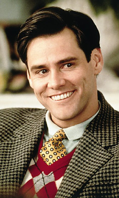

Джеймс Юджи́н Ке́ррі (англ. James Eugene "Jim" Carrey; 17 січня 1962, Ньюмаркет, Онтаріо, Канада) — канадсько-американський актор, продюсер, комік. Найбільш відомий за фільмами «Маска», «Ейс Вентура: Розшук домашніх тварин», «Ейс Вентура 2: Поклик природи», «Дурний і ще дурніший», «Брехун, брехун», «Брюс Всемогутній». Один з найбільш високооплачуваних коміків США.[4] Перша головна роль — Марк Кендал у фільмі «Одного разу вкушений» (англ. Once Bitten) 1985 року. Талант Керрі високо оцінений критикою: він володар двох (1999, 2000) і номінант ще на п'ять «Золотих глобусів» (у 2019 — за серіал «Жартую»), номінант на кінематографічну премію БАФТА (2005 — за фільм «Вічне сяйво чистого розуму») та прайм-тайм премію «Еммі» (2018 — за документальний фільм «Джим і Енді: Інший світ»), а також володар ряду інших премій.[5] До того ж у ЗМІ безліч разів зазначалося, що Керрі жодного разу за свою кар'єру не висувався на премію «Оскар».
